Scenario
As a cybersecurity analyst at SecureTech Industries, you've been alerted to unusual login attempts and unauthorized access within the company's network. Initial indicators suggest a potential brute-force attack on user accounts. Your mission is to analyze the provided log data to trace the attack's progression, determine the scope of the breach, and the attacker's TTPs.
Question 1:
What is the attacker's IP address?
To identify the attacker’s IP address, I began by analyzing failed authentication attempts. In Windows environments, failed logons are recorded under Event ID 4625 within the Security log.
Since the dataset consists of Winlogbeat logs, the traditional EventCode=4625 filter does not apply. Instead, the correct field to query is event.code. Additionally, because authentication events reside in the Security log, I specified the appropriate channel.
The query used was:
index=goldenspray winlog.channel=Security event.code=4625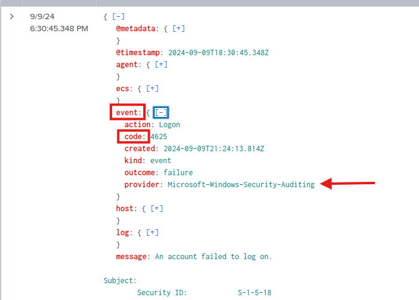
From reviewing the event structure, it is clear that the event ID is stored under the event.code field rather than EventCode, which explains why the standard Windows filter would not return results in this dataset.
To determine the source of the malicious activity, I aggregated failed logon attempts by source IP address:
index=goldenspray winlog.channel=Security event.code=4625
| stats count by winlog.event_data.IpAddress
| sort - countThis query counts the number of failed authentication attempts per IP address and sorts them in descending order, allowing us to identify the most aggressive source.
The results show that the IP address of 77.97.78.115 has the highest number of failed logon attempts.
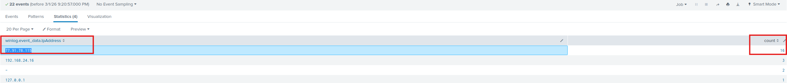
Given the volume of authentication failures originating from this address, it is highly indicative of brute-force or password spraying activity. Therefore, 77.91.78.115 is identified as the attacker’s IP address.
________________________________________
Question 2:
What country is the attack originating from?
After identifying the attacker’s IP address as 77.91.78.115, the next step was to determine the geographic origin of the activity.
To accomplish this, I performed an IP geolocation lookup using a reputable IP intelligence service.
Upon submitting the IP address 77.91.78.115, the lookup results indicated that the address is registered in: Finland
This suggests that the malicious authentication attempts originated from an IP address geolocated to Finland.
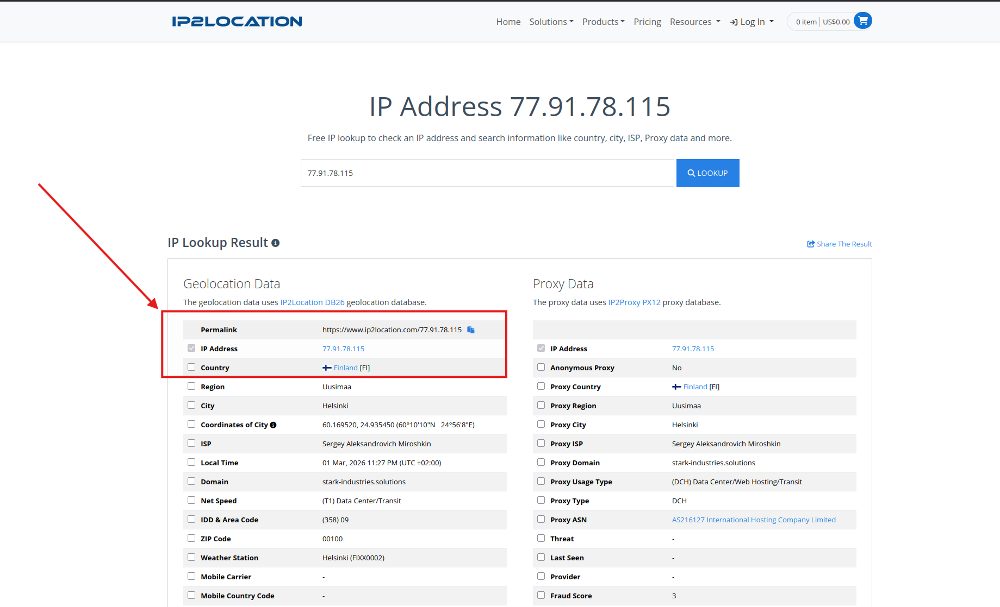
________________________________________
Question 3:
To identify the compromised account used for initial access, I pivoted from failed logon activity (Event ID 4625) to successful authentication events.
Successful logons in Windows are recorded under Event ID 4624 in the Security log. Since the attacker’s IP address was previously identified as 77.91.78.115, I filtered successful logon events originating specifically from that IP address.
The query used was:
index=goldenspray winlog.channel=Security event.code=4624 winlog.event_data.IpAddress=77.91.78.115This query returns all successful logon events associated with the malicious source IP.
The number of results was manageable, allowing for manual review. By sorting chronologically and examining the earliest successful logon from the attacker’s IP, I identified the first instance of authenticated access.
The event revealed that the compromised account was: SECURETECH\mwilliams
Additional relevant details from the event:
- Authentication Package: NTLM V2
- Workstation Name: kali
- Source IP Address: 77.91.78.115
- Timestamp: 9/9/2024 5:00:21.705 PM
The presence of a successful logon from an external IP address associated with prior failed authentication attempts strongly indicates that the account SECURETECH\mwilliams was successfully compromised and used for initial access.
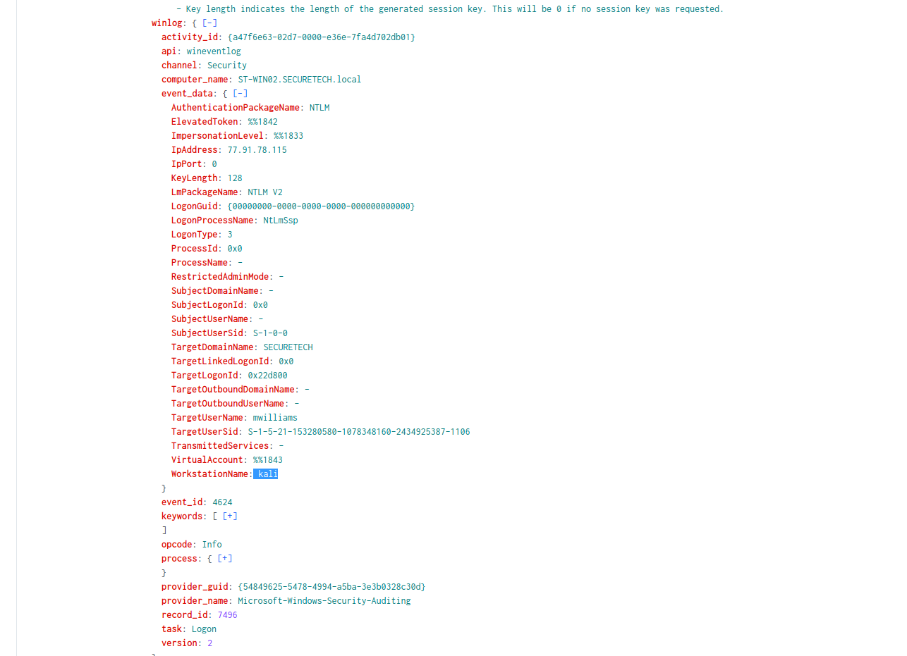
________________________________________
Question 4:
To identify the malicious file used for persistence, I shifted my focus from Security logs to Sysmon logs, as Sysmon provides enhanced visibility into file creation and process activity.
Specifically, I targeted Sysmon Event ID 11, which records file creation events. Since attackers commonly introduce malicious executables or scripts to establish persistence, monitoring file creation shortly after initial compromise is a logical investigative step.
From Question 3, the initial successful logon occurred at 9/9/2024 5:00:21.705 PM.
Using this timestamp as a pivot point, I searched for file creation activity on ST-WIN02 occurring shortly after the initial access.
The query used was:
index=goldenspray winlog.channel="Microsoft-Windows-Sysmon/Operational" winlog.event_id=11 winlog.computer_name="ST-WIN02.SECURETECH.local"Upon reviewing events after the initial compromise, I identified the following file creation event at 9/9/2024 5:12:14.553 PM.
The event revealed that the file: OfficeUpdater.exe was created in: C:\Windows\Temp\
The responsible process (Image) was:
C:\Windows\System32\WindowsPowerShell\v1.0\powershell.exe
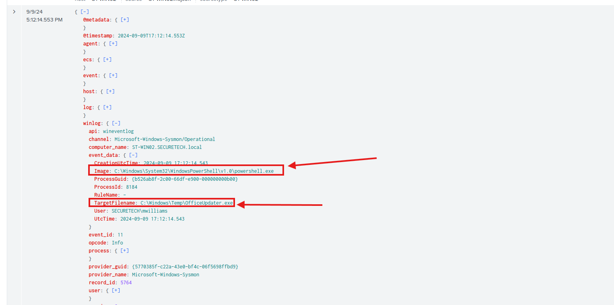
Several indicators strongly suggest malicious activity:
- The file was written to the Windows Temp directory, a common staging location for malware.
- The filename "OfficeUpdater.exe" attempts to mimic legitimate Microsoft software.
- The file was created by PowerShell, a frequently abused tool in post-exploitation scenarios.
- The activity occurred shortly after successful unauthorized access.
________________________________________
Question 5:
To identify the directory used by the attacker to store their tools, I continued analyzing Sysmon Event ID 11 (File Create) events on ST-WIN02, as this event captures both file and directory creation activity.
Using the same query from Question 4, I added specific fields to produce a cleaner and more structured output for analysis:
index=goldenspray winlog.channel="Microsoft-Windows-Sysmon/Operational" winlog.event_id=11 winlog.computer_name="ST-WIN02.SECURETECH.local"
| table _time winlog.computer_name winlog.event_data.Image winlog.event_data.TargetFilename winlog.event_data.User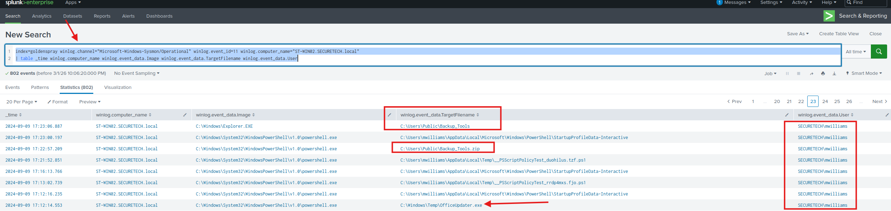
Shortly after the malicious file OfficeUpdater.exe was created in the Windows Temp directory, a new directory was created at C:\Users\Public\Backup_Tools\. The creation of a directory within the Public user path is highly suspicious, as this location is commonly used by attackers for staging tools due to its write access.
Further review of subsequent Sysmon Event ID 11 entries confirms malicious intent. At approximately 17:23:06 (05:23:06 PM). multiple executables were written into the Backup_Tools directory.
The following well-known post-exploitation tools were observed:
- mimikatz.exe
- PsExec.exe
- PowerView.exe
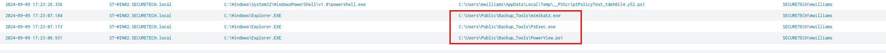
Each of these tools is commonly associated with credential dumping, lateral movement, and Active Directory reconnaissance.
________________________________________
Question 6
What's the process ID of the tool responsible for dumping credentials on ST-WIN02?
From Question 5, it was established that Mimikatz was introduced into the environment within the Backup_Tools directory. The next step was to determine when it was executed and identify the associated Process ID (PID) responsible for credential dumping activity.
Credential dumping tools such as Mimikatz commonly target the LSASS (Local Security Authority Subsystem Service) process to extract authentication material. Sysmon logs this behavior under Event ID 10 (Process Access), which captures attempts by one process to access another process’s memory.
To identify credential dumping activity, I executed the following query:
index=goldenspray winlog.channel="Microsoft-Windows-Sysmon/Operational" winlog.event_id=10 winlog.computer_name="ST-WIN02.SECURETECH.local" winlog.event_data.TargetImage=*lsass*
| stats count by winlog.event_data.CallTrace winlog.event_data.TargetImage, winlog.event_data.SourceImage, winlog.event_data.SourceProcessId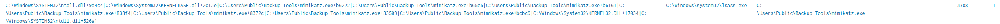
This query filters for:
- Sysmon Event ID 10 (ProcessAccess)
- Target process containing lsass
- Activity on ST-WIN02
It then aggregates the results to clearly display the source process, the process being accessed and the associated sourceprocessID.
The results show:
- mimikatz.exe executing from the C:\Users\Public\Backup_Tools\ directory
- Targeting lsass.exe
- With a SourceProcessId of 3708
The credential dumping activity occurred at: 9/9/2024 5:27:59.127 PM
Because accessing LSASS memory is a well-known technique for credential extraction, and Mimikatz is explicitly observed performing this action, it can be conclusively determined that:
The process ID responsible for dumping credentials on ST-WIN02 was 3708.
________________________________________
Question 7:
What's the second account username the attacker compromised and used for lateral movement?
From Question 6, it was established that Mimikatz executed successfully at 9/9/2024 5:27:59.127 PM, targeting lsass.exe for credential extraction. Given this activity, it is reasonable to assume that credential harvesting was successful.
The next logical step was to identify any new successful authentication events occurring shortly after the credential dump. If additional accounts were compromised, I would expect to see new Event ID 4624 (successful logon) events following the Mimikatz execution timestamp.
To identify this activity, I reused the following query, filtering for successful logons originating from the attacker’s IP address:
index=goldenspray winlog.channel=Security event.code=4624 winlog.event_data.IpAddress=77.91.78.115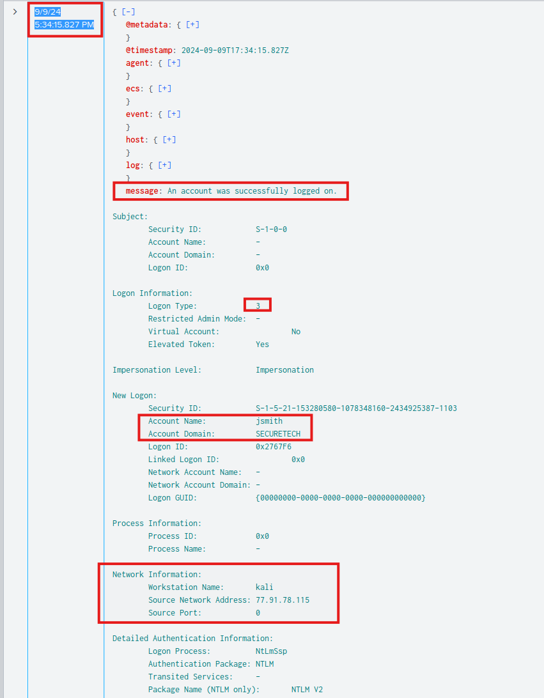
Upon reviewing events after 5:27:59 PM, the first successful logon event occurred at: 9/9/2024 5:34:15.827 PM.
This event shows a successful authentication for the account: SECURETECH\jsmith.
This authentication event occurred shortly after the execution of Mimikatz and originated from the same malicious IP address (77.91.78.115). The timing strongly suggests that the attacker successfully extracted credentials for SECURETECH\jsmith and subsequently authenticated using those credentials.
Given the chain of events:
- Mimikatz execution targeting LSASS
- Credential dumping activity
- New successful logon from the attacker’s IP
- Different user account authenticated
It can be safely concluded that the second compromised account used for lateral movement was: SECURETECH\jsmith.
________________________________________
Question 8:
To identify persistence on the domain controller, I initially searched for Security Event ID 4698, which indicates that a scheduled task was created. However, this query did not return relevant results.
Recognizing that scheduled task creation is also logged under the Microsoft-Windows-TaskScheduler/Operational channel, I pivoted to analyzing Event ID 106, which indicates that a scheduled task was successfully registered.
After querying for Event ID 106, I identified the following event:
![[Pasted image 20260301171230.png]]
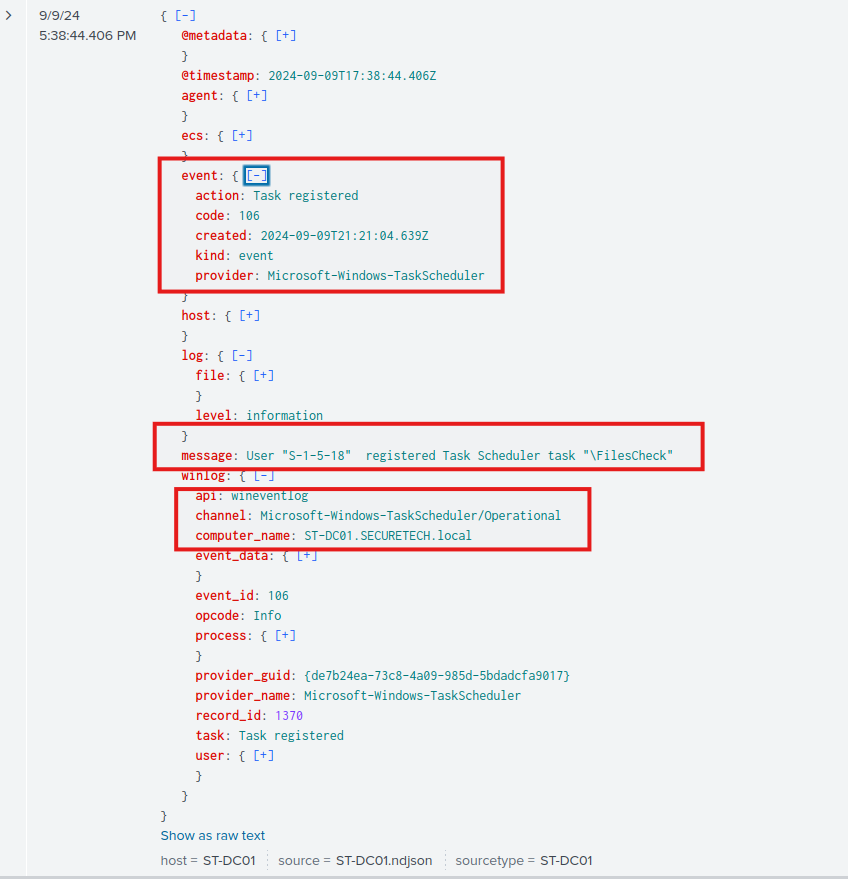
The event details reveal that a scheduled task named: FilesCheck was registered on the domain controller: ST-DC01.SECURETECH.local and the task creation occurred at 9/9/2024 5:38:44.406 PM.
________________________________________
Question 9:
What type of encryption is used for Kerberos tickets in the environment?
To determine the Kerberos ticket encryption type used within the environment, I analyzed Event ID 4769, which represents Kerberos Service Ticket (TGS) requests. TGS events contain important details regarding the encryption type used when issuing service tickets. To review these events, I executed the following query:
index=goldenspray winlog.channel=Security event.code=4769Upon reviewing the returned logs, I identified the following event:
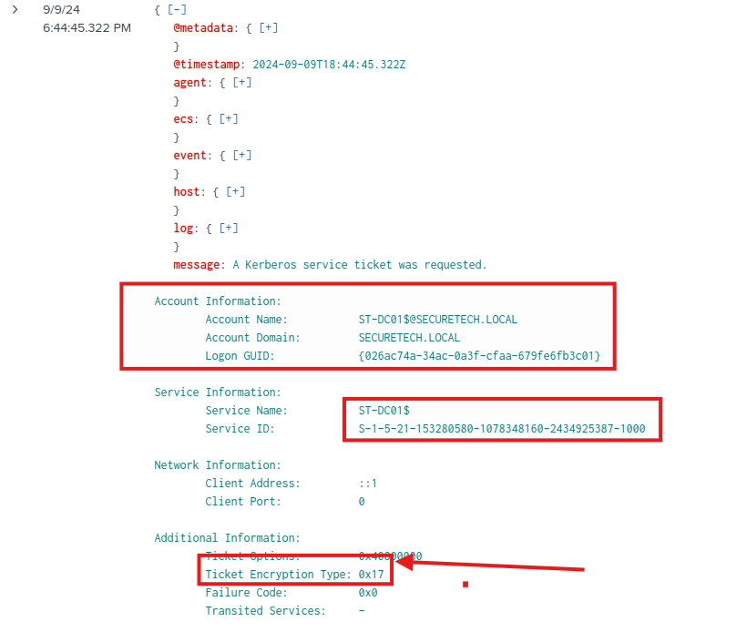
Within the event details, the field Ticket Encryption Type shows a value of 0x17. The hexadecimal value 0x17 corresponds to RC4-HMAC
RC4-HMAC is considered a legacy encryption algorithm and is weaker compared to modern Kerberos encryption standards such as AES128 or AES256.
The use of RC4-HMAC significantly increases the risk of Kerberoasting attacks, Offline password cracking of service account tickets, and Credential compromise leading to privilege escalation.
In Kerberoasting scenarios, attackers request TGS tickets for service accounts and attempt to crack the encrypted ticket offline. RC4-HMAC encryption makes this process considerably easier compared to stronger AES-based encryption.
________________________________________
Question 10:
Can you provide the full path of the output file in preparation for data exfiltration?
While analyzing Sysmon Event ID 11 (File Create) events earlier in the investigation, I identified activity that strongly indicated preparation for data exfiltration. During review of file creation activity on ST-WIN02, the following ZIP archive was created C:\Users\Public\Documents\Archive_8673812.zip.
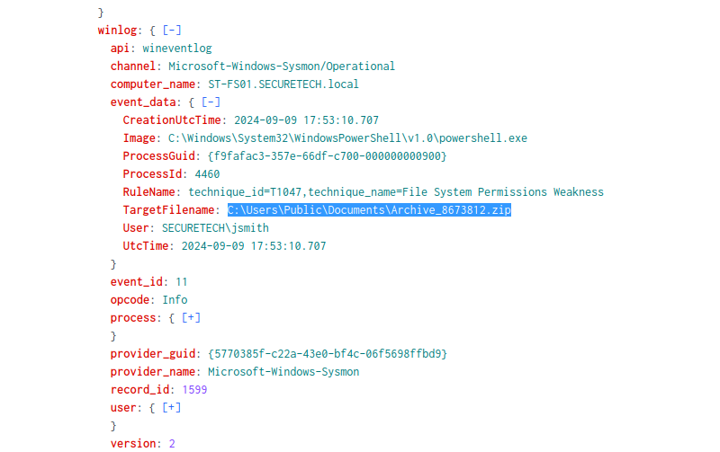
The creation of a ZIP archive in the Public Documents directory is highly suspicious, particularly given the context of the ongoing intrusion.
Several factors indicate this file was likely staged for exfiltration:
- The file is a compressed archive (.zip), commonly used to bundle data prior to transfer.
- It was created in a Public directory, a common attacker staging location.
- The filename follows a semi-randomized naming convention (Archive_8673812.zip), which is consistent with automated archiving tools or scripted exfiltration preparation.
- This activity occurred after credential dumping and lateral movement, aligning with typical attack progression: Initial Access -> Persistence -> Credential Access -> Lateral Movement -> Data Collection -> Exfiltration
Attackers frequently compress collected data before transferring it to Cloud storage providers, External servers, and or Command-and-control infrastructure.
________________________________________
| IOC Type | Value | Where Observed | Why It Matters |
|---|---|---|---|
| Attacker IP Address | 77.91.78.115 |
Security Log – Event ID 4625 / 4624 | Source of brute-force attempts and successful compromise |
| Initial Compromised Account | SECURETECH\mwilliams |
Security Log – Event ID 4624 | First account successfully authenticated by attacker |
| Second Compromised Account | SECURETECH\jsmith |
Security Log – Event ID 4624 | Used for lateral movement after credential dumping |
| Suspicious Workstation Name | kali |
Security Log – Event ID 4624 | Indicates attacker-controlled Linux host |
| Malicious File (Persistence Payload) | C:\Windows\Temp\OfficeUpdater.exe |
Sysmon Event ID 11 | Malicious executable dropped via PowerShell |
| Malicious Tool Staging Directory | C:\Users\Public\Backup_Tools\ |
Sysmon Event ID 11 | Centralized storage location for attacker toolset |
| Credential Dumping Tool | C:\Users\Public\Backup_Tools\mimikatz.exe |
Sysmon Event ID 10 | Used to access LSASS and extract credentials |
| LSASS Access | lsass.exe |
Sysmon Event ID 10 | Targeted for credential dumping |
| Credential Dumping Process ID | 3708 |
Sysmon Event ID 10 | Process ID responsible for LSASS memory access |
| Post-Exploitation Tools | PsExec.exe, PowerView.exe |
Sysmon Event ID 11 | Used for lateral movement and AD reconnaissance |
| Scheduled Task (Persistence on DC) | FilesCheck |
TaskScheduler Event ID 106 | Established persistence on Domain Controller |
| Domain Controller Targeted | ST-DC01.SECURETECH.local |
TaskScheduler Event ID 106 | Indicates escalation to Domain Controller |
| Exfiltration Archive | C:\Users\Public\Documents\Archive_8673812.zip |
Sysmon Event ID 11 | Data staged for exfiltration |
| Kerberos Encryption Type | RC4-HMAC (0x17) |
Security Event ID 4769 | Weak encryption enabling Kerberoasting risk |